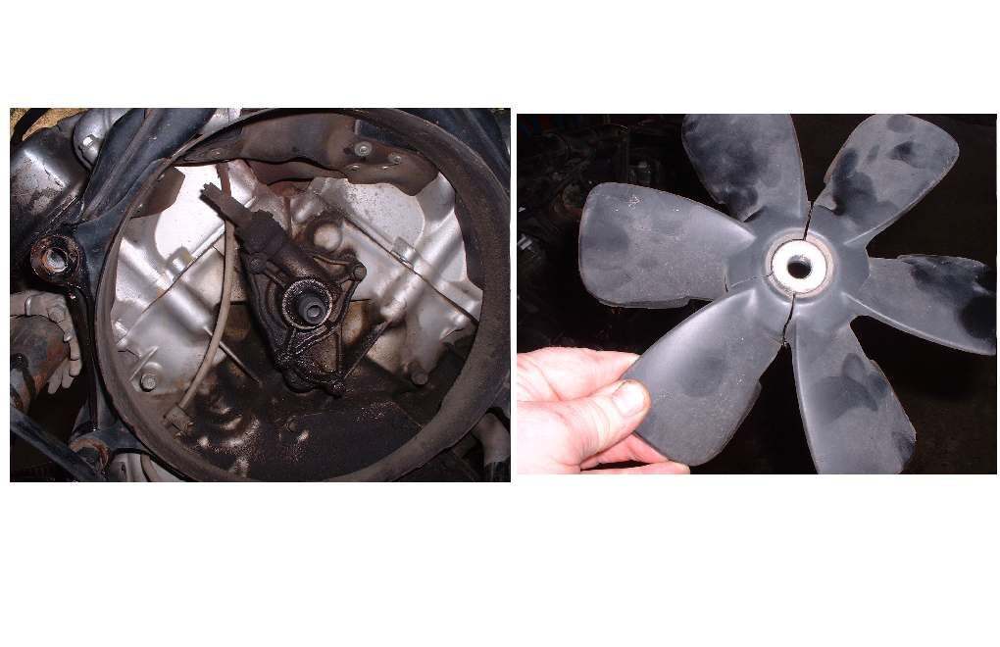
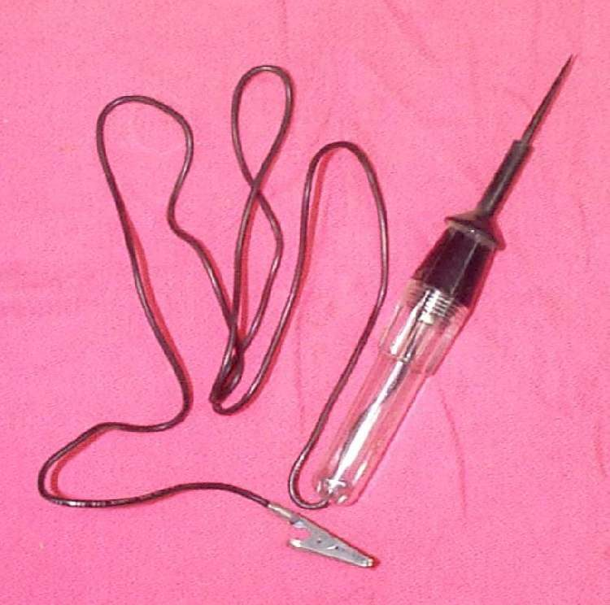
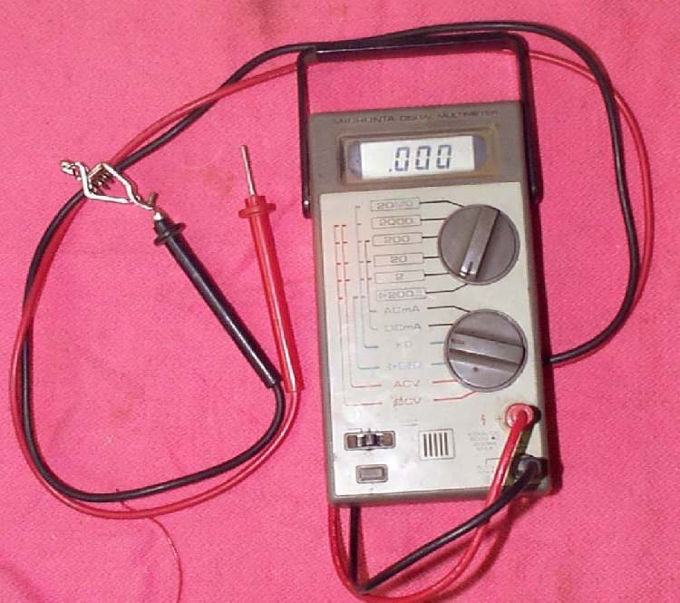
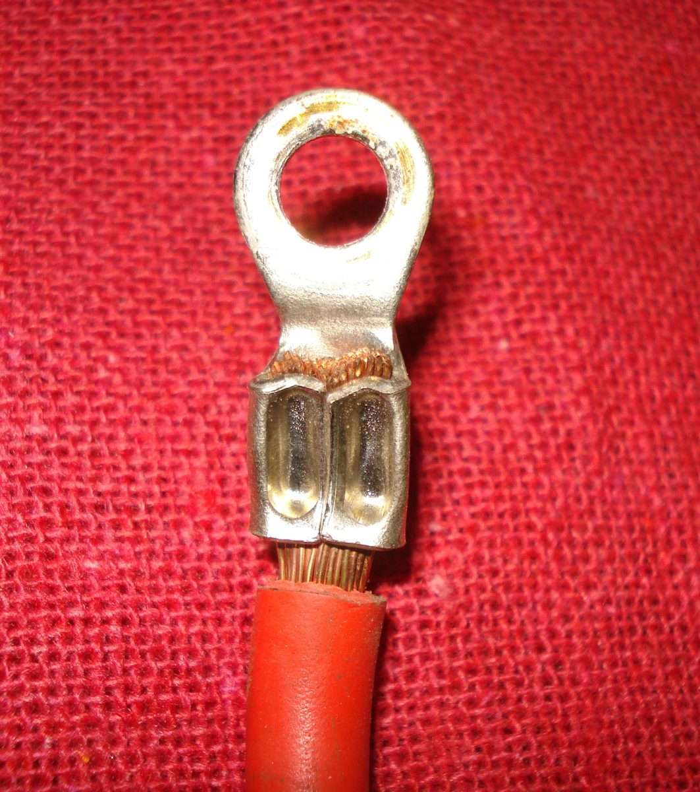

At road speed, wind cools the radiator. In slow traffic and at idle, the electric fan behind the radiator must switch on when the coolant gets hot, and off again when it cools. If it never runs, the engine overheats in traffic but may be fine on the open road. Causes include a blown fuse, a seized fan motor, a broken switch or temperature sensor, a faulty relay, broken wiring, or low coolant that leaves the switch in air. On many fuel-injected bikes the ECU controls the fan.
Is it safe to ride?
Yes with care on open roads where airflow is good. Avoid traffic jams and long idling; stop if the gauge enters the red.
Quick checks first
- With the engine fully warm at idle, does the fan ever start? Watch the gauge closely and stop the engine before the red.
- Check the fan fuse.
- Spin the fan blades by hand (key off): free or stiff?
- Coolant level when cold.
Diagnose it step by step
1Is the coolant level correct when cold? Check with Check and top up coolant.
- No: top up and retest. Low coolant can keep the switch or sensor from sensing heat.
- Yes: go to step 2.
2Idle the engine on the stand from cold, watching the gauge. Does the fan start before the red zone?
- Yes: the fan works. If the bike still overheats, go to Liquid-cooled engine overheats.
- No: stop the engine before the red. Go to step 3.
3Is the fan fuse blown? Check with Check fuses and relays.
- Yes: replace with the same rating. If it blows again, the fan motor may be seized or shorted: see Fuse keeps blowing.
- No: go to step 4.
4Does the fan spin when fed directly from the battery through a fused lead? Follow Test the radiator fan and its switch.
- No: the fan motor has failed. Replace the fan.
- Yes: go to step 5.
5Does the fan run when you bridge the switch wire as the test page shows (switch type), or is there a temperature sensor code (ECU type)? Read codes with Read engine fault codes (fuel injection).
- Fan runs when bridged: the thermostatic switch is faulty. Replace it.
- Sensor code: see Temperature gauge reads high or the warning light is on.
- Neither: go to step 6.
6. Check the relay and the wiring with Find a wiring fault. Look for corroded connectors near the radiator, where water and dirt hit.
Causes, most likely first
| Cause | How to confirm | Fix |
|---|---|---|
| Blown fuse | Fuse check | Check fuses and relays |
| Fan motor seized or burnt | No spin on direct feed | Test the radiator fan and its switch |
| Faulty thermostatic switch | Runs when bridged | Test the radiator fan and its switch |
| Sensor or relay fault (ECU type) | Fault code, relay test | Read engine fault codes (fuel injection) |
| Broken or corroded wiring | Visual, continuity | Find a wiring fault |
| Low coolant | Reserve tank | Check and top up coolant |